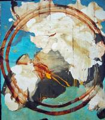
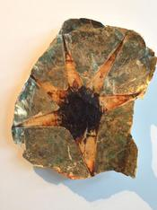
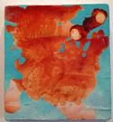
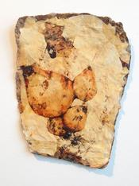
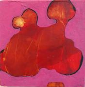
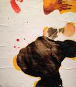
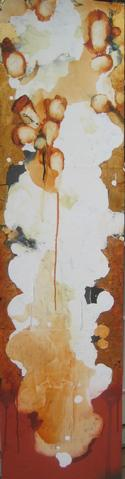
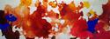

David Geiser
"Geiser searches to capture a rare truth and impart it in his art."
"The initial impression of David Geiser's paintings is their physical appearance,
the palpability of the work.
These pieces reveal their manual construction, the process
that brought them into being... they are tough,
unruly pieces, crafted by hand."
BUTTERS GALLERY
Paintings, June 2016
 Thistle Cenote I, 2016 mixed media on wood panel 45" x 40" x 1.5" |
 Echo Cenote, 2016 mixed media on wood panel 54" x 48" x 1.5" |
 Untitled #3, 2016 mixed media on paper 19.5" x 16" |
|
 Ocean Flower XIV, 2016 mixed media on panel 14.5" x 13.5" |
 Untitled #2, 2016 mixed media on paper 15.75" x 12.50" |
 Rose II, 2016 mixed media on wood panel 11.25" x 11.25" x 1.5" |
|
 Day Before Lascaux Series XXII, 2014 mixed media on panel 13.5" x 12" |
 Golden Gate VI, 2013 mixed media on panel 72" x 18" x 1" |
 Hoo Doo, 2014 mixed media on panel 22" x 60" |
| Home | ||
{kind=link}
{kind=link}
{kind=link}
{kind=link}
{kind=link}
{kind=link}
{kind=link}
{kind=link}